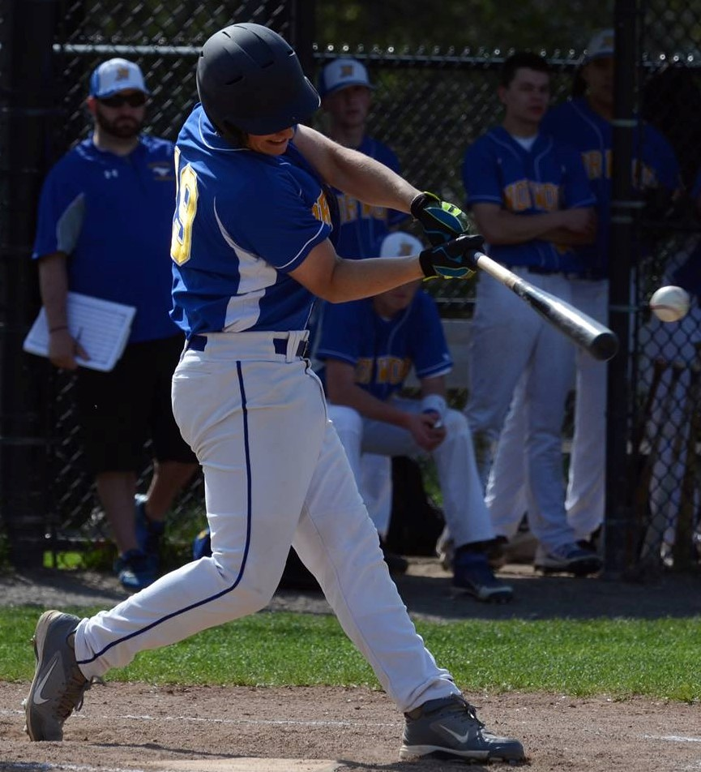

Home
Welcome to my website! This site is a constant work in progress, as I expand further into testing new elements. This website is currently composed of HTML and CSS, with PHP integration currently in the works. Here is where I will keep a log of every big change that occurs on the site.
---------------------------------------
UPDATE 4:
Changing name of tab for Video Production to Video to prevent formatting errors across other devices. Added embeded videos to the video tab. Added to the About page.
---------------------------------------
UPDATE 3:
Experimenting with fonts so that no formatting gets messed up across platforms. Possibly look into coding a mobile version. Starting to work on video production tab.
---------------------------------------
UPDATE 2:
Just about finished about and programming pages. Will look into video production page at a later time. All hyperlinks should work, as well as link with resume.pdf
---------------------------------------
UPDATE 1:
As of 2/17/2018, website is up and running at djsullivan.tk. Domain name was received from freenom.com, with website being hosted from 000webhost.com, whose website looks super sketchy, but it works. Since it is a free hosting site, my website is scheduled to be inactive from 12am to 1pm. Looking into making it at a more conveinient time (ie 3am-4am?).
---------------------------------------
UPDATE 0:
Website base code created. Made in all HTML and CSS. Cannot figure out PHP page and how to send e-mails through it. Will look into it in future.
Programming
Although I have been interested in computers and programming for my entire life, I did not begin coding until my senior year of high school. Here, I took a course in AP Computer Science. In college so far, I have taken 10 computer science courses. These courses are:
- CS 1101: Introduction to Program Design (Racket)
- CS 2102: Object-Oriented Design Concepts (Java)
- CS 2011: Machine Organization and Assembly Language (C)
- CS 2022: Discrete Mathematics
- CS 2223: Algorithms (Python)
- CS 2303: Systems Programming Concepts (C/C++)
- CS 3013: Operating Systems (C)
- CS 3041: Human Computer Interaction
- CS 3133: Foundations of Computer Science
- CS 3516: Computer Networks (Python/C)
By the end of my Sophomore year, I will have also completed:
- CS 3733: Software Engineering
The courses that I have code for are linked with their github repository link if you would like to see the homework assignments that I had completed.
I am also working on several projects in my free time. Such projects include:
- My Personal Website
- Random Movie Generator Application
- Baseball Statistics Tracker
- Banking Exploit Keyboard
The projects that have repositories have been linked to their respective repositories on my github as well.
Video Production
In high school, I heavily participated in the school's television program. I have always been interested in video production, and have been producing videos since I was in elementary school. When I transferred to Norwood High School during my Sophomore year, I immediately joined the program.
Once at the high school, I began working on producing many journalism stories and sports highlights. Towards the end of my Sophomore year, I began getting involved in the daily live news broadcast, which went out to the entire school. Here, I began by doing teleprompter, camera, audio, switching, and floor director. My junior year, I began being a regular host on the news, as well as a host on the monthly video segment Mustang Magazine, which was a show that compiled the best stories from the entire television program.
Over the years, I competed in numerous competitions for the Student Television Network. They would host competitions over the school year where students must produce a story based on a certain topic over the span of 5 days. I also competed in the competition that was hosted at the Student Television Network convention, where my school competed against many other schools from across the nation, as well as some from outside.
Awards for my journalism video production work:
- 2015 National Academy of Television Arts and Sciences Sports Reel: 1st Place
- 2015 Student Television Network Sports Story: Honorable Mention
- 2016 National Scholastic Press Association Regional Sports Broadcast Story of the Year: 1st Place
- 2016 National Scholastic Press Association National Sports Broadcast Story of the Year: 4th Place
- 2016 National Academy of Television Arts and Sciences Regional Sports Reel: 1st Place
- 2016 National Academy of Television Arts and Sciences Arts and Cultural Affairs: 1st Place
- 2016 Student Television Network National Sports Story: 2nd Place
Awards for my other video production work:
- 2015 Student Television Network Daily Live Show (NE Region): 1st Place
- 2015 National Academy of Television Arts and Science Newscast: Honorable Mention
- 2016 Student Television Network Daily Live Show (NE Region): 1st Place
- 2016 Student Television Network Monthly Show (NE Region): 1st Place
- 2016 National Scholastic Press Association Pacemaker Award: 1st Place
Along with my school work, I also have been volunteering and working for Norwood Public Access Television as a freelance video producer for them. I film and edit many different events, such as sports, meetings, concerts, and speakers to name a few. I also work with multiple other people to produce larger events, such as sporting events or concerts. Here, I have worked various different jobs, such as audio, switcher, camera, announcer, and director.
Here are some samples of my work, along with any achievements they were awarded.
Matt Brown was just a sophomore hockey player when the entire course of his life changed after just one collision. In this video, I was in charge of video production and editing, as well as writing and refining the voice over script.
- 2015 Student Television Network Challenge: 2nd Place
Jerry Witunsky may appear to be just a metalhead on the outside, but there's much more to him than that. In this video, I was in charge of video production and editing, as well as writing and refining the voice over script.
- 2016 National Academy of Television Arts and Sciences Arts and Cultural Affairs: 1st Place
The Norwood High School Field Hockey team had a special home field advantage in 2014. In this video, I was in charge of video production and editing, as well as writing and refining the voice over script.
- Part of 2015 National Academy of Television Arts and Sciences Sports Reel: 1st Place
- 2016 National Scholastic Press Association Regional Sports Broadcast Story of the Year: 1st Place
- 2016 National Scholastic Press Association National Sports Broadcast Story of the Year: 4th Place
Mustang Magazine is a monthly installment of the best student-created projects from Norwood High School. In this production, I was one of the hosts and had a story in the production.
The Norwood Mustangs have a new coaching staff, with hopes of a better turnout than last year. In this video, I was in charge of video production and editing, and wrote the entire voice over script.
- Part of 2015 National Academy of Television Arts and Sciences Sports Reel: 1st Place
Fans gathered at Gillete Stadium on May 24, 2015 in order to express their beliefs on the ruling of Deflategate. In this video, I was in charge of video production, editing, voice over script, and voice over.
- Did not win any awards, just one of my personal favorites, and all filmed on a phone.
About
 I am a Computer Science major at Worcester Polytechnic Institute, on track for a Bachelors of Science Degree, with a strong interest in pursuing cyber security or software engineering. I am currently a Sophomore and on track to graduate in May of 2020.
I am a Computer Science major at Worcester Polytechnic Institute, on track for a Bachelors of Science Degree, with a strong interest in pursuing cyber security or software engineering. I am currently a Sophomore and on track to graduate in May of 2020.
Throughout my life, I have had a passion for computers, following in the steps of my father. Computers have always been a big part of my life, and figuring out how they and the software works has been an interest of mine since I was a child. I did not begin programming until my senior year of high school, but I always have known I have wanted to do it.
Alongside my interest in computers, I also have a strong interest in video production and film. For just about the same time I found myself interested in computers, I found myself interested in making videos. I have been producing videos for most of my life, and utilized that skill throughout high school, being a part of the daily morning news team and winning several awards for my journalism stories.
Another passion I have is for sports. I have played baseball for nearly the enitrety of my life and have always had a love for it. I have also played football and basketball, but my favorite has always been (and will be) baseball. I was a part of the 2015 Massachusetts Division I State Championship team in high school, as well as the 2nd place 2014 Division I State Championship team. I cotinued to play up until my final year of eligibility in American Legion Baseball for the Post 70 Norwood team.
My full CV can be found here: CV
Here are some other links of mine that may interest you: